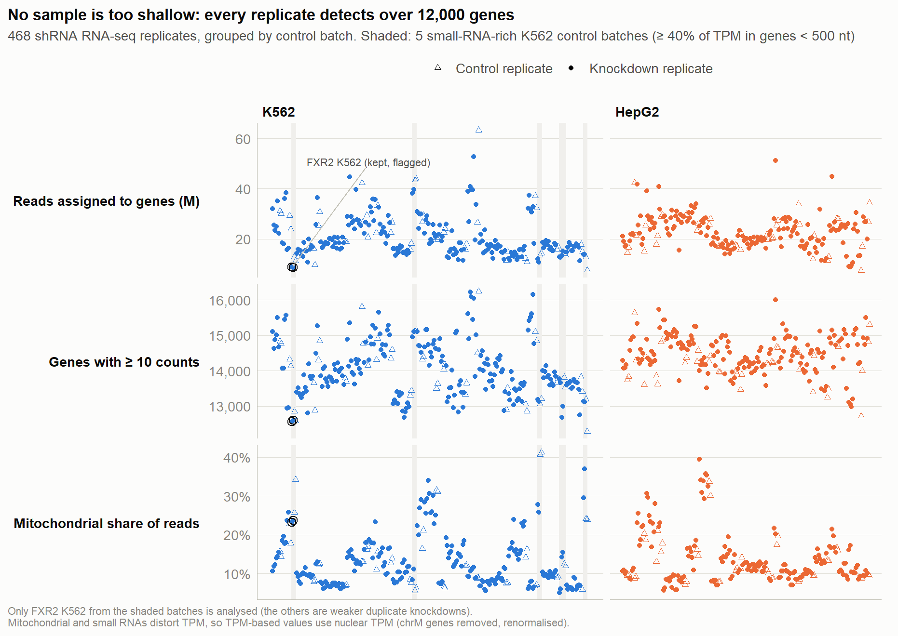
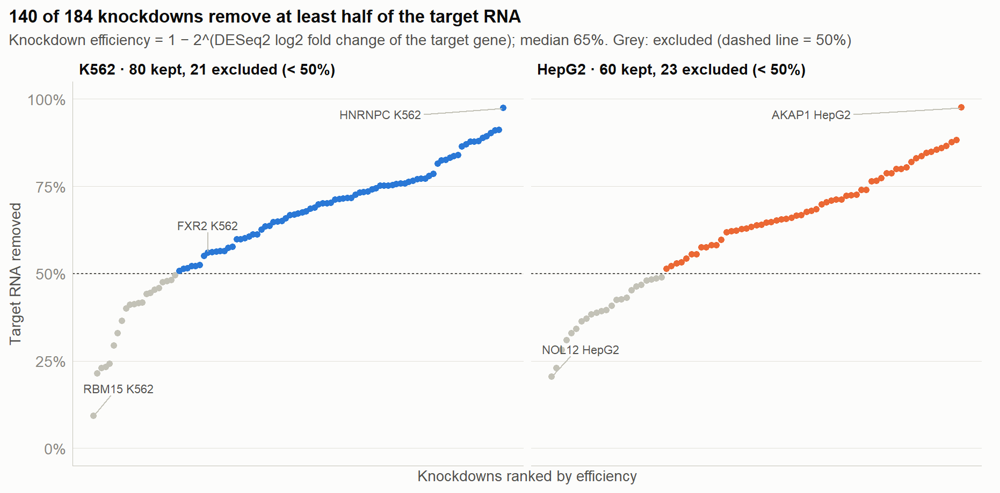
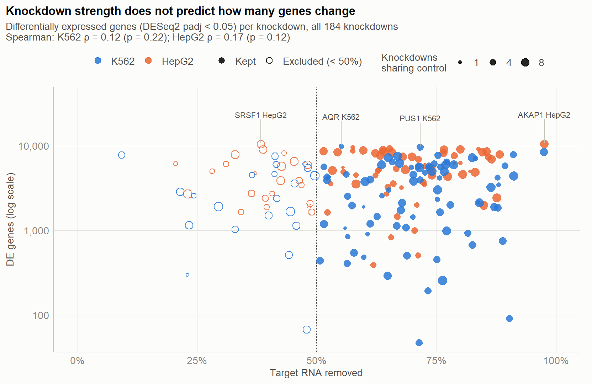
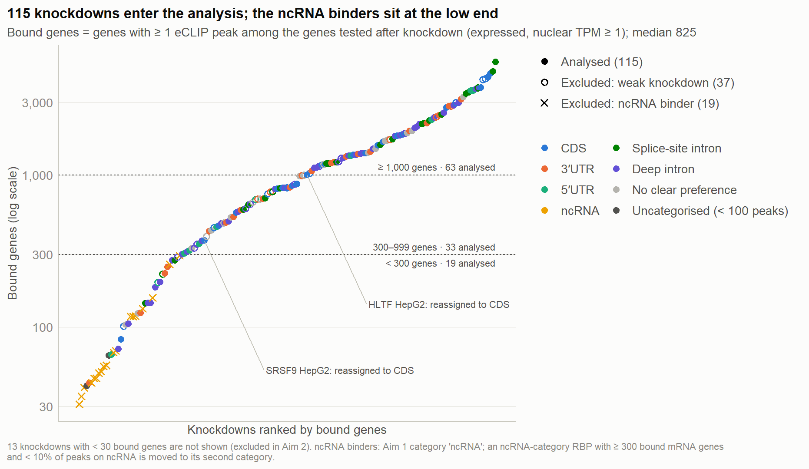
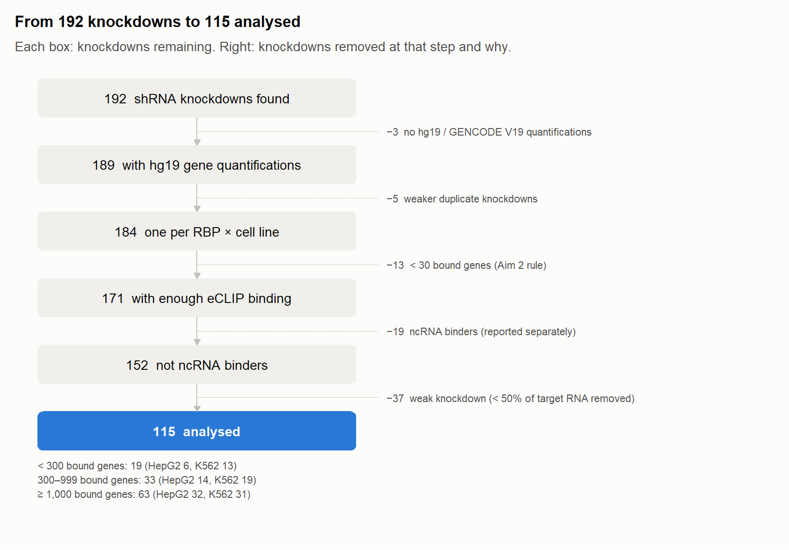

Knockdown data
Which shRNA knockdowns are good enough to test whether binding changes RNA levels?
To ask whether an RBP’s binding changes the RNA levels of its targets, each eCLIP experiment is paired with an RNA-seq experiment in which the same RBP was depleted by shRNA knockdown in the same cell line, and compared with a matched control. Before testing binding, this page checks the knockdown data: sequencing depth, how strongly each RBP was depleted, and how many genes each RBP binds.
189 shRNA knockdowns have hg19 gene quantifications (4 CRISPRi knockdowns were set aside). Keeping the strongest knockdown per RBP and cell line (5 weaker duplicates dropped) leaves 184 knockdowns of 128 RBPs, 56 of them in both cell lines. They share 41 control experiments (up to 11 knockdowns per control).
Are the RNA-seq samples deep enough?

Extended legend
- Samples: 468 replicates (378 knockdown, 90 control); ENCODE RSEM gene quantifications, GENCODE V19 genes only.
- Depth: 7.5–63 M reads assigned to genes (median 20 M). Every replicate detects at least 12,285 genes with ≥ 10 counts; replicate correlation is ≥ 0.984 (log TPM).
- Mitochondrial reads: 5%–41% of reads (median 11%). These, and small RNAs, distort TPM, so expression is measured as nuclear TPM (TPM recomputed without the 37 mitochondrial genes).
- Shaded: 5 K562 control batches with an unusually large share of TPM in short genes (small RNAs), and their 6 knockdowns. Only FXR2 K562 is analysed from these (the others are weaker duplicates); it is flagged and every headline result was checked without it.
Script: analysis/R/12_kd_qc.R. Figures: analysis/R/12_kd_qc_figures.R; data: analysis/results/tables/kd_sample_qc.tsv.
How strongly was each RBP depleted?

Extended legend
- Efficiency: 1 − 2^(DESeq2 log2 fold change of the knocked-down RBP’s own gene), i.e. the share of the target RNA removed. Median 65% (range 9%–98%). It agrees with the nuclear-TPM ratio (Spearman ρ = 0.91).
- Exclusion: knockdowns removing less than 50% of the target RNA do not achieve the intended perturbation and are excluded (44: 21 K562, 23 HepG2). This removes NOL12 HepG2, one of the earlier “specific” examples. FXR2 K562 (56%) is kept.
- Differential expression: one DESeq2 model per control batch (the control plus every selected knockdown that uses it); shrunken log2 fold changes (apeglm); significant = adjusted p < 0.05.
Script: analysis/R/10_knockdown_de.R. (differential expression), analysis/R/12_kd_qc.R; data: analysis/results/tables/kd_groups.tsv.
Does a stronger knockdown change more genes?

Extended legend
- Changed genes per knockdown: median 4,309 (range 47–10,477).
- Correlation with efficiency: Spearman ρ = 0.12 (K562), 0.17 (HepG2). Even weak knockdowns change thousands of genes.
- Interpretation: most changes after a knockdown are not specific to the depleted RBP: knockdowns sharing a control correlate, and a general response to the procedure is likely. This is why the next page compares bound genes with unbound genes in the same knockdown, never knockdowns with each other.
Script: analysis/R/12_kd_qc.R.
How many genes does each RBP bind?

Extended legend
- Bound gene: ≥ 1 eCLIP peak of the same RBP in the same cell line (the experiment with most peaks), among genes tested after the knockdown and expressed in the controls (nuclear TPM ≥ 1). Median 1,190 bound genes per analysed knockdown.
- Excluded: 0 knockdowns with < 30 bound genes (not shown); 19 ncRNA binders (main binding category from Where RBPs bind), whose targets are mostly not measured by gene-level RNA-seq; and the weak knockdowns from Figure 2.
- Reassigned: an ncRNA-category RBP with ≥ 300 bound mRNA genes and < 10% of peaks on ncRNA is moved to its second category (HLTF HepG2 and SRSF9 HepG2 → CDS) for this analysis only.
- Tiers (dashed lines): < 300, 300–999 and ≥ 1,000 bound genes.
Script: analysis/R/12_kd_qc.R.
The analysed set

Extended legend
- Analysed: 115 knockdowns (63 K562, 52 HepG2), split by bound genes into 19 (< 300), 33 (300–999) and 63 (≥ 1,000).
- Order of exclusion: no hg19 data → weaker duplicates → too few bound genes → ncRNA binders → weak knockdowns.
Script: analysis/R/12_kd_qc.R.
Key takeaways
- The RNA-seq data are deep and consistent. All 468 replicates detect ≥ 12,285 genes; distortions of TPM by mitochondrial and small RNAs are removed by using nuclear TPM.
- About a quarter of knockdowns are too weak. 44 of 184 remove less than half of the target RNA and are excluded.
- A knockdown changes thousands of genes regardless of its strength, so the effect of binding must be judged within each knockdown, against unbound genes.
- 115 knockdowns enter the analysis of whether binding changes RNA levels → Binding and RNA change.